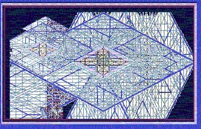

In the Beginning |
|  |
|
There was a beginning before all that is; but before all that, we were
among the audience that heard the command, “Let there be.” That such a
thing could be considered, let alone commanded, means that all that is
has some sort of existence before the command, “Let there be.”
This is affirmed in the expression, “In the beginning, Elohim created
the Heavens and the Earth.” These were not eternal realities existing
apart from God, but were created by God “in” the beginning. Thus, the
beginning was with God; and the beginning was at the command of God; for
it was with God before the beginning was a thing that had any reality
apart from God.
That which began in the beginning was not God, however; for God created,
“in the beginning.” That there is said to have been a beginning that was
created can only mean that there is a reality that exists before time
and will continue to exist after time; for in that reality is the power
to create time, as the expression, “in the beginning” affirms.
All that which is, subsequent to the beginning, must bear the imprimatur
of the reality that could conceive of such a thing as a beginning; for
it is written, “the invisible things of God are clearly seen in the
things that are made.” That which came to be could not be considered as
God; for it is an expression of God that was within God before God drew
upon the eternal realm to create a beginning, which is among the
invisible things that are of God. God therefore drew upon eternal
essence to create a beginning, emptying some portion of the eternal
realm into an immortal realm, which is called ‘the Heavens,’ and a
mortal realm, which is called ‘the Earth.’” |
|
site |
Media |
book |